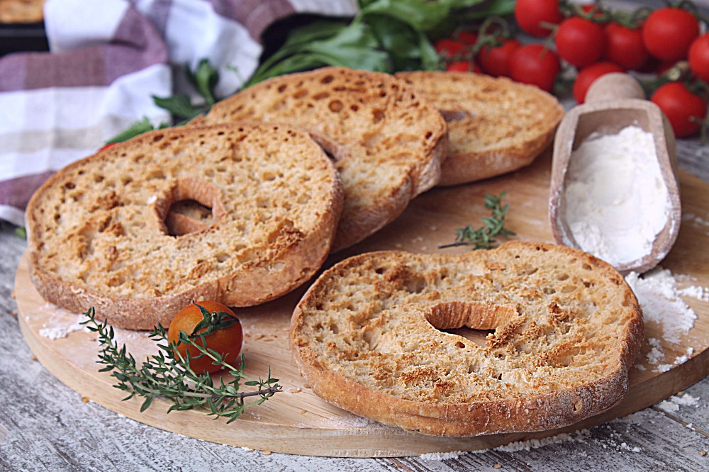

Frisele or frise is a traditional Italian rusk originating from Puglia. It's made with a combination of plain flour, semolina flour, sea salt, yeast, and water. The rusks are double-baked, which greatly improves their shelf life. When served, friselle are usually soaked in seawater or springwater. If the rusks are topped with fresh tomatoes, they are then known as friselle Salentina, a specialty of Salento.
Meal prep time : 1 hour 40 minutes
Servings : 5